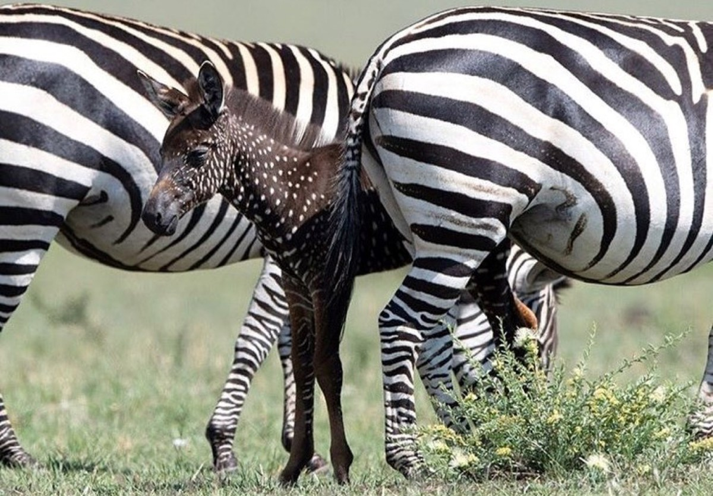

| Nombre | Cebra |
| Familia | Equidae |
| Nombre Cientifico | Equus |
| Estado de conservación | Preocupación menor |
| Habitat | Llanuras secas |
| Alimentación | Hierba tosca , Brotes , Hojas |
| Población | 70.000 - 100.000 |
Las cebras presentan un tamaño medio de 2,3 metros de longitud, 1,2-1,5 metros de altura a la cruz y un peso de aproximadamente 300 kilogramos, aunque las cebras de Grevy pueden llegar a pesar hasta 450 kilogramos. En esta última especie, los machos y las hembras tienen un tamaño similar, pero en las cebras comunes y las cebras de montaña los machos son ligeramente más grandes.12 Las cebras tienen un total de cuarenta dientes: doce incisivos que utilizan para cortar y arrancar trozos de vegetación, cuatro caninos, doce premolares y doce molares, todos utilizados para moler el alimento antes de tragárselo.
Viven desde las zonas de transición entre la sabana y el desierto del sur de Sudán y de Etiopía